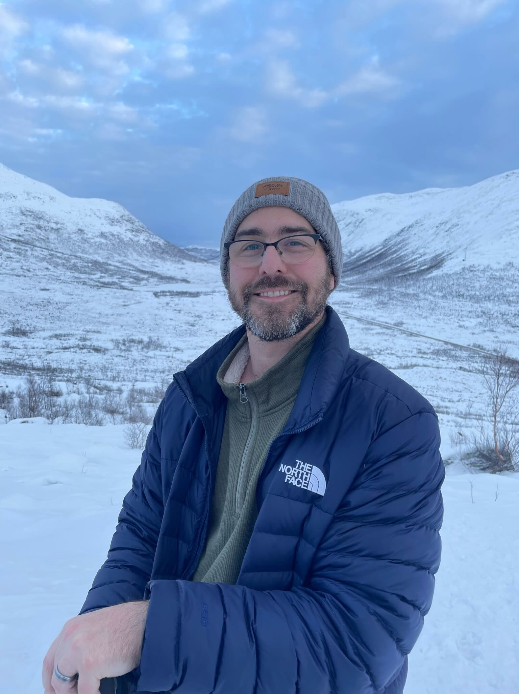
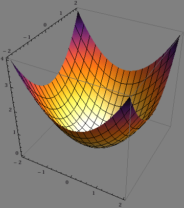
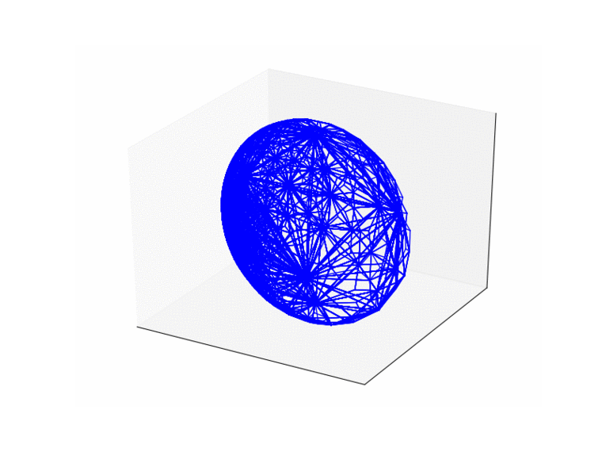
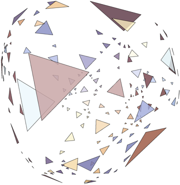
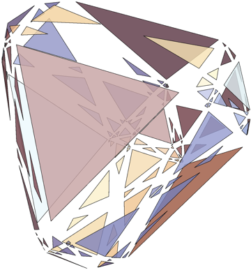
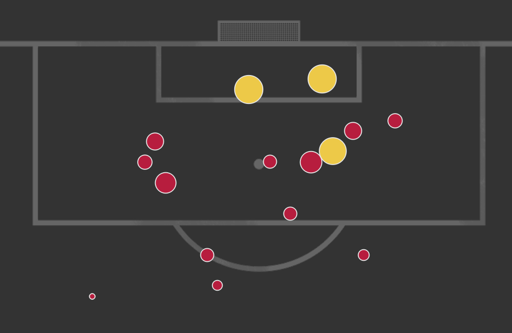
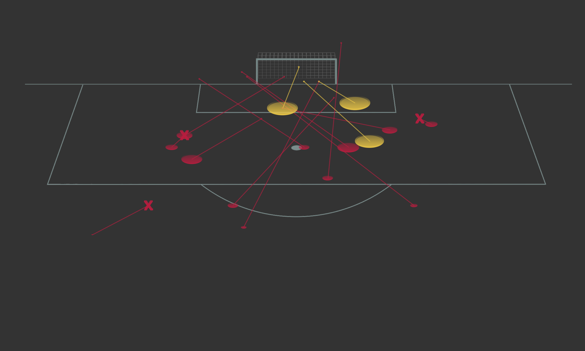
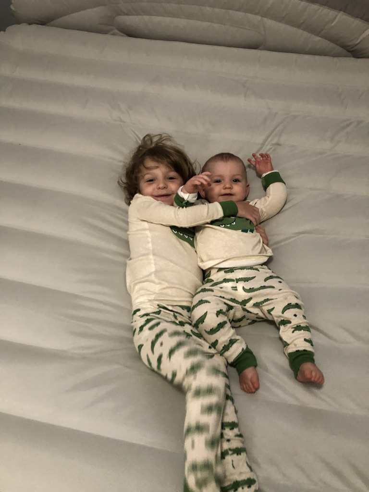
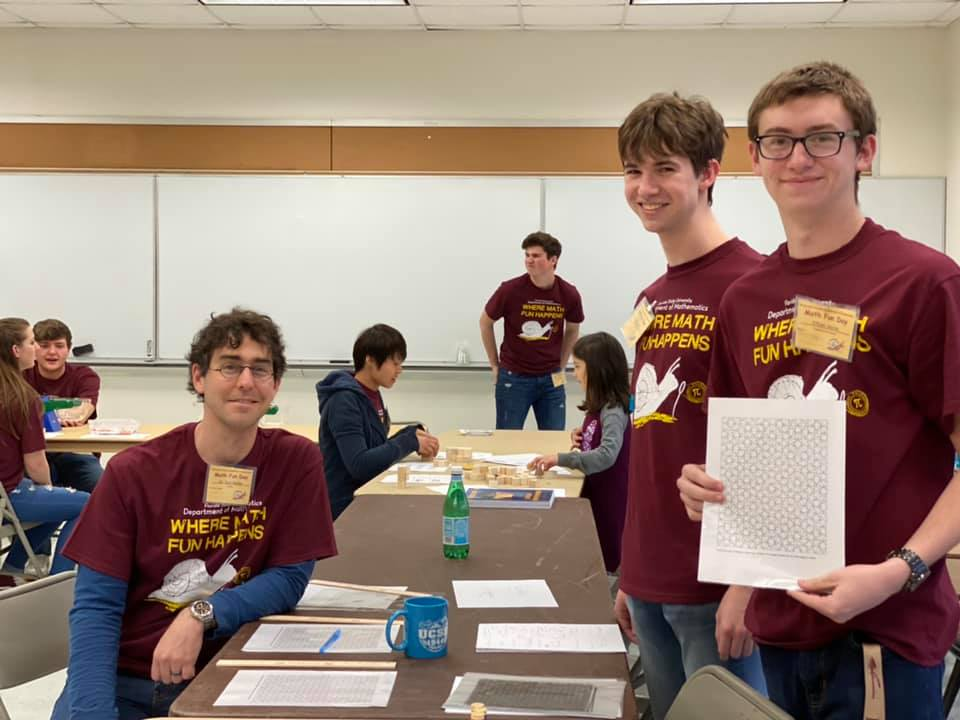

I am currently an associate professor in the Department of Mathematics at Florida State University. I also serve as the Director of Pure Mathematics, so feel free to reach out if you have questions about our pure math graduate program.
Previously I was an RTG visiting assistant professor at UC Santa Barbara. Before that I was a graduate student at The University of Texas at Austin under the supervision of Alan Reid.
If you want to learn more about my research check out my short Research Statement or CV. You may also be interested in this artice featuring my research written for school aged children. This article was produced by Futurum, a magazine and online platform aimed at inspiring young people to follow a career in the sciences, research and technology.

My research is primarily concerned with understanding various types of geometric structures on manifolds. Studying these structures typically involves the interplay of techniques from algebra, geometry, and topology.
My research was previously supported by the National Science Foundation (grant DMS-1709097)
Copies may be available upon request




Math Fun Day
Recently I helped the analytics team for the FSU Women's Soccer Team. I was able to use projective geometry to help them turn 2D shot data into 3D shot charts.


...into 3D shot charts like these.

In previous semesters I have organized the topology and geometry seminar.